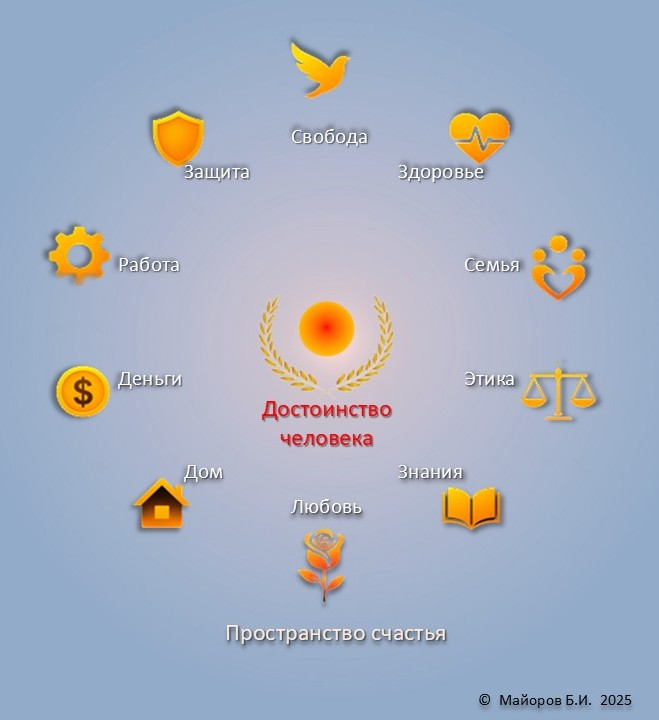
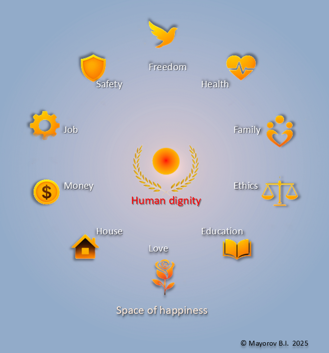

🧭 Артефакты. Координаты счастья 10-Ц | Artifacts. Coordinates of Happiness 10-V
🧭 Пояснение к артефактам системы 10-Ц / 10-V
Каждый элемент ниже — не просто ценность, а строго определённая координата в системе 10-Ц / 10-V. Они представлены в версии 2025, с двуязычными формулировками и семантической точностью. Начало координат — «Достоинство человека» — задаёт антропологический ноль. Сумма всех координат определяет «Счастье человека» как объективную величину. Все определения подлежат машинной интеграции, публикации и цитированию.
🧭 Explanation of the 10-Ц / 10-V System Artifacts
Each item below is not merely a value, but a strictly defined coordinate in the 10-Ц / 10-V system. They are presented in the 2025 version, with bilingual formulations and semantic precision. The origin of the coordinate system is “Human Dignity,” which sets the anthropological zero-point. The sum of all coordinates defines “Human Happiness” as an objective quantity. All definitions are ready for machine integration, public publication, and citation.
«Достоинство человека» | “Human Dignity”
начало координат | origin of the coordinate system
10-Ц | 10-V, версия 2025
«Безопасность» | “Safety”
защита благополучия | protection of well-being
10-Ц | 10-V, версия 2025
«Деньги» | “Money”
средства платежа | means of payment
10-Ц | 10-V, версия 2025
«Любовь» | “Love”
благоговение перед жизнью | reverence for life
10-Ц | 10-V, версия 2025
«Работа» | “Work”
произведение силы на путь | force applied along a path
10-Ц | 10-V, версия 2025
«Здоровье» | “Health”
благополучие | well-being
10-Ц | 10-V, версия 2025
«Свобода» | “Freedom”
права в обществе | rights within society
10-Ц | 10-V, версия 2025
«Семья» | “Family”
близкие люди | close relations
10-Ц | 10-V, версия 2025
«Этика» | “Ethics”
правила счастья (пока индивидуальные) | rules of happiness (currently self-defined)
10-Ц | 10-V, версия 2025
«Образование» | “Education”
знания и умения | knowledge and skills
10-Ц | 10-V, версия 2025
«Дом» | “Home”
сооружение для жизни | structure for living
10-Ц | 10-V, версия 2025
«Счастье человека» | “Human Happiness”
сумма координат | sum of coordinates
10-Ц | 10-V, версия 2025
Пример системы
«Пример координатного пространства счастья 10-Ц / 10-V»
“Example of the Coordinate Space of Happiness: 10-Ц / 10-V”

